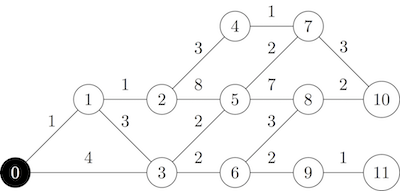

Quick start#
Coin change#
Here is an dynamic programming example, with coin change (6 lines of source code):
#!/usr/bin/env python3
from tryalgo import coin_change
print(coin_change([3, 5, 11], 29))
Which should print True because 29 can be expressed as the linear combination 6*3 + 0*5 + 1*11.
Longest palindrome substring of a string#
In order to find the longest palindrome substring of a string, you can use the implementation of Manacher’s algorithm (source) as follows:
from tryalgo import manacher
print(manacher("babcbabcbaccba"))
which will print (1,10). Indeed, the substring from index 1 to index 10 (excluding position 10) is the palindrome “abcbabcba”.
Pathfinding#
Now, suppose you want to compute the shortest paths in the following graph starting at vertex 0.
{kind=link}
First, we need to encode this graph with a an adjacency list data structure graph, which format we call listlist, where graph[u] is the list of neighbors of vertex u. The edge weights are simply encoded in a squared matrix:
graph = [[1, 3],
[0, 2, 3],
[1, 4, 5],
[0, 1, 5, 6],
[2, 7],
[2, 3, 7, 8],
[3, 8, 9],
[4, 5, 10],
[5, 6, 10],
[6, 11],
[7, 8],
[9]]
_ = None
# 0 1 2 3 4 5 6 7 8 9 10 11
weights = [[_, 1, _, 4, _, _, _, _, _, _, _, _], # 0
[1, _, 1, 3, _, _, _, _, _, _, _, _], # 1
[_, 1, _, _, 3, 8, _, _, _, _, _, _], # 2
[4, 3, _, _, _, 2, 2, _, _, _, _, _], # 3
[_, _, 3, _, _, _, _, 1, _, _, _, _], # 4
[_, _, 8, 2, _, _, _, 2, 7, _, _, _], # 5
[_, _, _, 2, _, _, _, _, 3, 2, _, _], # 6
[_, _, _, _, 1, 2, _, _, _, _, 3, _], # 7
[_, _, _, _, _, 7, 3, _, _, _, 2, _], # 8
[_, _, _, _, _, _, 2, _, _, _, _, 1], # 9
[_, _, _, _, _, _, _, 3, 2, _, _, _], #10
[_, _, _, _, _, _, _, _, _, 1, _, _]] #11
The shortest path can be computed using Dijkstra’s algorithm, also known as lowest-cost search. Our implementation returns the table of distances from the source and a predecessor table describing the shortest path tree:
from tryalgo import dijkstra
dist, prec = dijkstra(graph, weights, source=0)
node = 10
print(dist[10]) # Will print 9, the distance from node 0 to node 10
path = [node]
while prec[node] is not None:
node = prec[node]
path.append(node)
print(path[::-1]) # Will print [0, 1, 2, 4, 7, 10], a shortest path from 0 to 10
If your graph is sparse (contains few arcs), then you might want to represent it using dictionaries. Formally, the sparse graph representation is a list of dictionaries sparse such that v belongs to sparse[u] if there is an arc (u,v) of weight sparse[u][v].
We call this graph format listdict. For example, the above graph would be represented as:
[{1: 1, 3: 4},
{0: 1, 2: 1, 3: 3},
{1: 1, 4: 3, 5: 8},
{0: 4, 1: 3, 5: 2, 6: 2},
{2: 3, 7: 1},
{2: 8, 3: 2, 7: 2, 8: 7},
{3: 2, 8: 3, 9: 2},
{4: 1, 5: 2, 10: 3},
{5: 7, 6: 3, 10: 2},
{6: 2, 11: 1},
{7: 3, 8: 2},
{9: 1}]
This data structure encodes both the graph and the arc weights, hence it is possible to invoke the function the following way:
dist, prec = dijkstra(sparse, sparse, source=0)